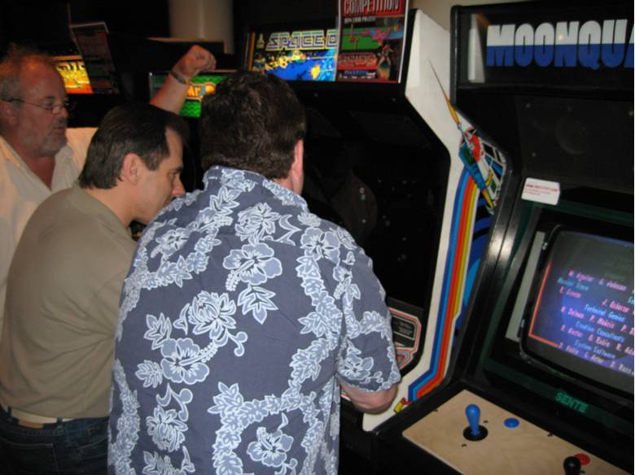
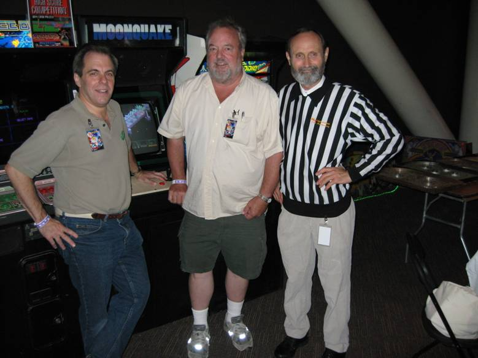

|
Current News
Wednesday, April 22, 2014
Added Podcast link from Arcade Outsiders. Removed Expert Witness badges (they no longer support them!)
Waiting for more questions....
Wednesday, April 10, 2013
Updates and new pictures, new article to Triple Hunt
Waiting for more questions....
Friday, June 17, 2011
Added some email to page 8 of mail. Still need to rearrange that to newest first. Some day.
Let me know what you want to hear about. Happy to answer questions.
Friday, April 1, 2011
Updated a very old resume. Yea, should have been some kind of April Fools Joke. Maybe next time.
Thursday, December 25, 2010
Added new mail, added an articale to Shrike Avenger.
Wednesday, October 12, 2010
Added new mail. Updated Space Duel page with a link to a new Font avaialble based on the Space Duel Game.
Wednesday, October 6, 2010
Saturday, April 24, 2010
Added a new pictures of the Sebring cabinet. Added a few more Marquees to the Games page as well.
Friday, April 9, 2010
Added a new pictures of the SkyDiver cabinet. Added a few more Marquees to the Games page.
Wednesday, March 10, 2010
Added a few pictures for Tunnel Hunt / Tube Chase Marquee. The Tube Chase
Marquee is a picture I took of the original maquee for the prototype
game. The Tunnel Hunt marquee is courtesy of Mitchell Rohde, who has
one
of the games, and was kind enough to take a picture, which I cleaned up
in Photoshop for here. Also added a Marquee picture for
Orbit, Skydiver, and Space Duel, and a few new Space Duel and Orbit
Cabinet pictures as well. I also added these marquees to the stories
page.
I hope to
get
as many
pictures
as I can
for each
of the
games
listed. Sadly,
some where never built, so they will not have images.
Also added new images for Shrike Avenger, Goalie
Ghost, and Name That Tune.
Wednesday, March 3, 2010
More clean up, and a number of new pictures added as well. Also
changing the story page to include marquee pictures of some of my
games, where available. If you know of some of the marquees that I
am
missing, please let me know.
Thursday, February 24, 2010
Cleaned up a lot of code, corrected HTML errors, added Google Analytics.
That was the mundane part. I also added a bunh of new pictures for
many of my games, and will add more soon. Check out the changes by going
to
the Games & Stories secton,
and browse through the game pages.
Thursday, February 22, 2010
Hi all. I am back. Yes, I know, it has been a few years since thie
site wss updated, and my apologies for that. Seems Brian, my old site
manager got
tired of doing it! Actually, just kidding, he really got busy with
other things, and this was, after all, just a hobby for him. Thanks
Brian for all
the hard work and making the site so cool. But now I have to step up.
So I have taken over the code myself, and I will try and make updates
here as
soon as possible. But you can help. Send me some email (see botton
of page) and ask questions, and I will answer. It makes it a lot more
fun too. Hope
to hear from you as well.
Thursday, August 16, 2007
Owen attended California Extreme last weekend, and site friend Francis
Mariani just happened to be there also. Francis sent along a couple
of photos of
Owen playing his creation, Space Duel, as well as a shot of (left to
right in bottom picture) Owen with Al Alcorn (Atari legend, creator
of Pong) and
Walter Day, Official Scorekeeper of Twin Galaxies and a legend in his
own right. Good stuff!


Wednesday, August 15, 2007
Added some "lost" emails that Owen sent along- one of which talks in detail
about Shrike Avenger, the motion simulator game Sente was working on back
in 1986 that was never released. And some good stuff about the warp codes
and other details in Major Havoc. I've also added a new email about Triple
Hunt and the mystery of the single-game upright version... hmmm... Jump over
to the Mailbag and check it out!!
I've also removed any broken links and fixed the others. I'll be adding some
new ones as I sort through the myriad of links I've gathered over the years.
Enjoy this update!
Monday, August 6, 2007
Wow! 2 1/2 years since the last update! As you may have noticed, the color
scheme has changed to signify that work has resumed on the site by your extremely
busy webmaster. A ton of life-changing things have happened over the past
couple of years, and Owen himself has been extremely busy with his career.
Hence, why the site has fallen into tertiary mode over the past couple of
years. But, never you worry! The site is undergoing a complete redesign to
bring it up to modern standards, and some new features will be added as the
redesign commences. Over the next few days, I'll be adding some mail that
Owen has forwarded me over time, and some broken or otherwise dead links
will be fixed. That should keep you all a bit busy while the site transforms.
Meanwhile, keep checking back for more updates.- Brian
Past News
|
|
|